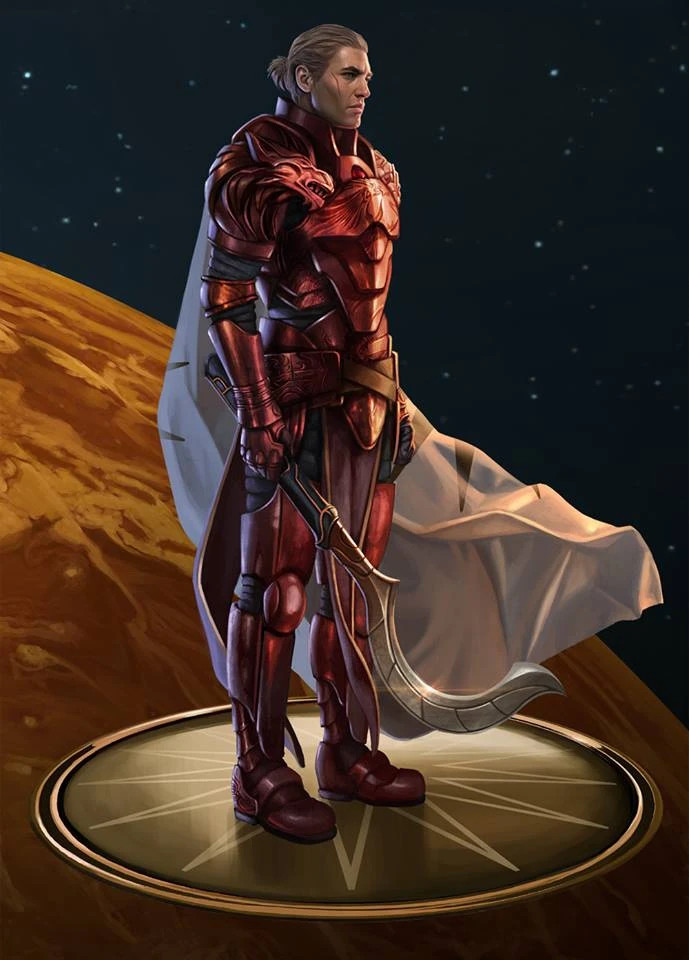

Darrow of Lykos

Darrow of Lykos is the protagonist of the Red Rising series by Pierce Brown. Born a lowRed miner on Mars, he is transformed into a Gold and infiltrates the ruling class to bring down the oppressive Society from within.
- Darrow sacrifices everything, including his own identity, to fight for the freedom of the people he was born into.
- He is relentless and endlessly resourceful, outthinking enemies who have every institutional advantage over him.
- Despite the brutality of his world, he holds onto loyalty and love for the people closest to him, which keeps him human.
- Darrow leads by example rather than by rank, repeatedly risking his own life alongside the people he commands instead of directing them from safety.